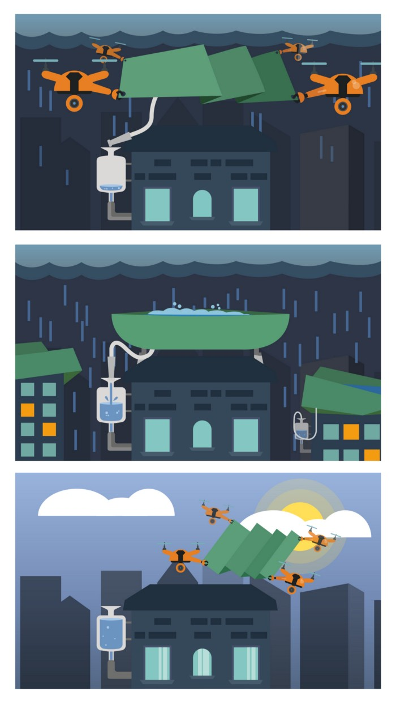

Å samle inn regn av droner, som i tillegg renser vannet gjennom et enkelt og rimelig filtreringssystem. Dronene trenger kun å løfte og brette ut presenningen over taket eller på hvilken som helst overflate.
Presenningen kan også plasseres over fire stolper i hvert hjørne på taket, et rør drenerer vannet til en beholder festet til bygningen, et filtreringssystem renser deretter vannet.
Når regnet er over, kommer droner tilbake og fjerner presenningen, og tar den med til et lagrings-anlegg, der også dronene lader seg opp.
Ved å ha markører, sensorer, et digitalt kart, kan dronene klare seg selv autonomt. Opplæring i systemet ved maskin-læring vil også gjøre det mulig for ingeniøren å finjustere alle detaljer og tekniske spesifikasjoner.
Dette er bare et eksempel eller en presentasjon av en idé, for å gi deg noen perspektiver av hvordan det kan se ut:
